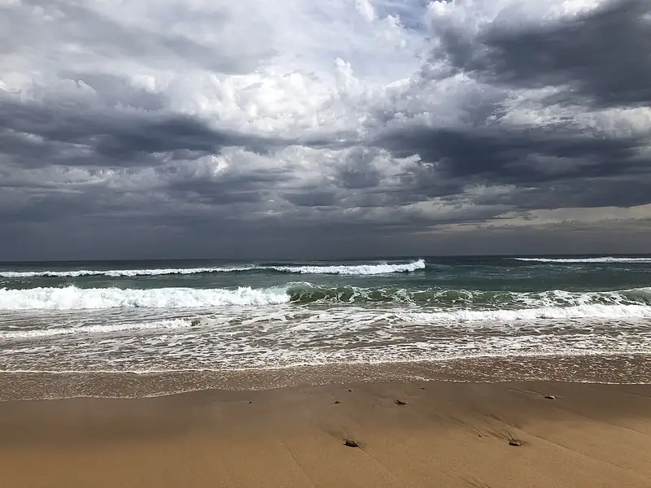

Gunnamatta Beach, Cape Schanck
Gunnamatta Beach is a beach in Cape Schanck, in the Mornington Peninsula Shire Council area, good for all ages. The nearest public toilet is about 465 m away.


Quick facts
- Toilets
- 465 m away
Details
- Toilets
- yes (Parks Victoria)
Questions parents ask
- Where is Gunnamatta Beach?
- Gunnamatta Beach is in Cape Schanck, Victoria.
- Is Gunnamatta Beach free?
- Yes. It is a public beach, free to visit.
- Are there toilets at Gunnamatta Beach?
- The nearest public toilet is about 465 m away.
Nearby places
- Fingal Beach
Beach · Cape SchanckFree
- Playground on Trent Jones Drive
Playground · Cape SchanckFree
- Fingal Bushland Reserve
Park · Cape SchanckFree
- Hawkes Farm
Cafe or restaurant · Boneo
- Cape Schanck Lighthouse Reserve
Park · Cape SchanckToilet nearbyNo dogsFree
- Silitto Vineyard & Olive Grove
Cafe or restaurant · Boneo
- Skate park on Melbourne Road
Skate, BMX or pump track · RyeToilet nearbyFreeBus 2 min walk
- McCrae Plaza
Shopping centre · McCraeToilet nearbyBus 3 min walk